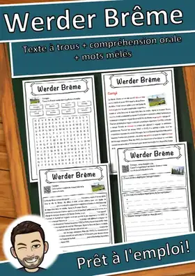
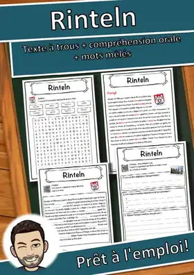
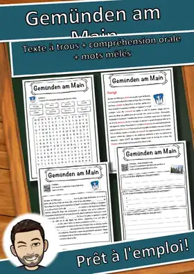
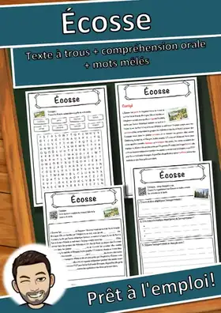
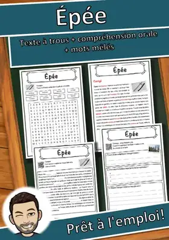
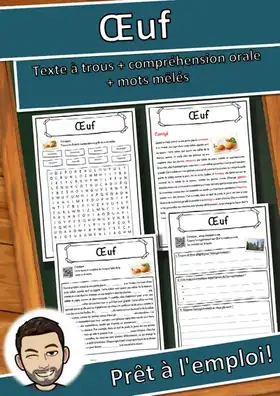
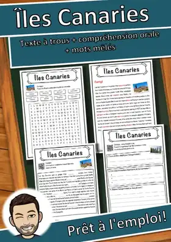
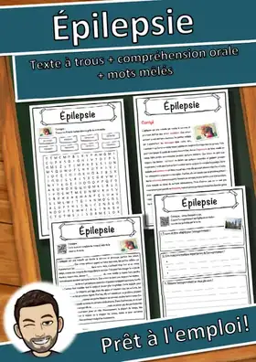

Werder Brême – Fiche : texte à trous, compréhension orale et mots mêlés
2,99 €Voir sur eduki
Fiche prête à l'emploi sur « Werder Brême » : texte documentaire à trous avec réserve de mots, compréhension orale avec enregistrement réel (code QR, sans préparation), grille de mots mêlés et corrigé complet. Matériel autonome pour la classe, le soutien, les remplacements ou les devoi
ThèmeCulture générale
NiveauxCM1, CM2
Type de ressourceFiche de lecture
FormatPDF
CorrigéInclus
Ressources similaires

Rinteln – Fiche : texte à trous, compréhension orale et mots mêlés

Gemünden am Main – Fiche : texte à trous, compréhension orale et mots mêlés

Écosse – Fiche : texte à trous, compréhension orale et mots mêlés
Wasserburg am Inn – Fiche : texte à trous, compréhension orale et mots mêlés

Épée – Fiche : texte à trous, compréhension orale et mots mêlés

Œuf – Fiche : texte à trous, compréhension orale et mots mêlés

Îles Canaries – Fiche : texte à trous, compréhension orale et mots mêlés
